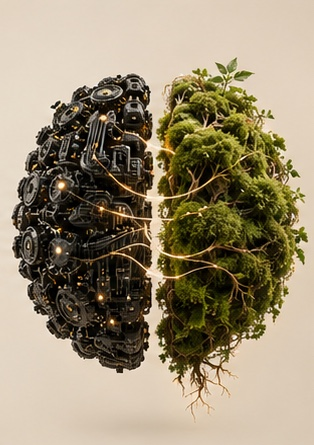

Erstgespräch
0 €
- Kurzer Fragebogen vorab
- Wir klären, ob und wie ich helfen kann
- Kein Verkaufsgespräch, keine Verpflichtung
Coaching auf Basis von Neuro-Resonanz, NLP und Hypnose — für Menschen, die Leistung bringen wollen und merken, dass etwas sie bremst. Wir arbeiten an der Ursache, nicht am Symptom.

Dein Gehirn hat gelernt, auf Dauerbelastung mit Daueralarm zu reagieren. Was gelernt ist, lässt sich neu lernen — das nennt man Neuroplastizität. Kreuze rechts an, was du aus den letzten Wochen kennst.
Kreuze an, was du aus den letzten Wochen kennst.
ErstgesprächSechs Zugänge, ein Ziel: dass dein Kopf wieder für dich arbeitet.

Neuro-Resonanz Kopf und Nervensystem wieder in Einklang bringen: Ruhe, Schlaf, Konzentration. Hypnose Gebündelte Aufmerksamkeit und direkter Zugang zu dem, was unter der Oberfläche wirkt. Blockaden lösen Alte Muster erkennen, verstehen und Glied für Glied durchbrechen.Ein Gehirn zum Anfassen: Areale, Werkzeuge und eine Blockade, die du selbst herausziehen kannst. Es bewegt sich nur, wenn du es bewegst.
Jedes Areal hat eine Aufgabe — und jedes lässt sich trainieren. Berühre eine Region oder wähle sie oben aus.
Drei Stufen, die auf der Lernfähigkeit deines Gehirns aufbauen.
Wir schauen, welche Muster dein Nervensystem gerade fährt — ohne Diagnose-Etikett.
Wir finden die Verknüpfung unter dem Symptom: Auslöser, Körper, Gedanke, Reaktion.
Du trainierst neue Reaktionen, bis dein Gehirn sie automatisch wählt.
Jede Sitzung kostet 150 € für 60 Minuten — einzeln oder im Themenpaket. Das Erstgespräch ist kostenlos.
Alle Preise sind Endpreise; als Kleinunternehmer berechne ich keine Umsatzsteuer (§ 19 UStG). Keine Mindestlaufzeit, keine Rabattstaffel. Alle Details zum Angebot
Selbstregulation ist trainierbar. Der Atem-Anker ist eines der ersten Werkzeuge im Coaching: 4 Sekunden ein, 4 halten, 6 aus. Die lange Ausatmung sagt deinem Körper, dass keine Gefahr besteht.
Vier typische Verläufe — anonymisiert und in Details verändert.
Herzrasen und Blackout vor jedem Vorstands-Meeting. Vier Sitzungen mit Ankertechniken und Submodalitätenarbeit — dann freie Rede, ruhige Stimme, klare Botschaft.
Projekte wurden nie fertig, weil „noch nicht gut genug". Glaubenssatzarbeit und Timeline haben den Anspruch umgebaut. Das Projekt ging raus, das Grübeln ließ nach.
Anlagestrategie vorhanden, im Depot trotzdem impulsive Entscheidungen: hektisches Nachkaufen nach Verlusten, Verkaufen am Tiefpunkt. Ruhe-Anker auf die Körperreaktion, neuer Glaubenssatz zum Verlust — acht Wochen ohne eine Entscheidung außerhalb der eigenen Regeln.
Neue Stelle in einer anderen Stadt, gleichzeitig Trennung — monatelang keine Entscheidung. Aufstellungsarbeit mit den inneren Anteilen, dann Zielearbeit. Entscheidung in der dritten Sitzung, ohne Rückfall.
[Zitat]
[Zitat]
[Zitat]
20 Minuten per Video, kostenlos. Vorher beantwortest du einen kurzen Fragebogen, damit wir die Zeit gut nutzen. Du erzählst, ich höre zu und sage dir ehrlich, ob und wie ich helfen kann.
Eine Sitzung kostet 150 € für 60 Minuten, das Themenpaket mit vier Sitzungen 600 €. Coaching ist eine Selbstzahlerleistung; Arbeitgeber übernehmen es häufig als Weiterbildung — eine Rechnung bekommst du selbstverständlich.
Coaching ist keine Heilkunde. Bei psychischen Erkrankungen — etwa Angststörungen, Depressionen oder Traumafolgen — ist ärztliche oder psychotherapeutische Hilfe der richtige Weg. Der Fragebogen fragt das kurz ab, und ich sage dir offen, wenn ich nicht der Richtige bin.
20 Minuten, kostenlos, ohne Verkaufsgespräch. Du entscheidest danach in Ruhe.
Termin anfragen